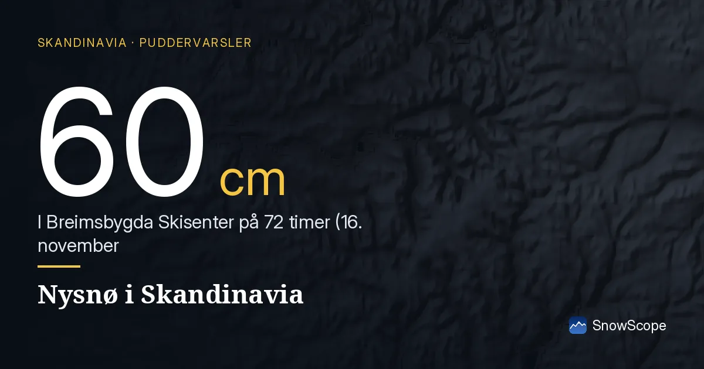

Bare 49 % av normal snø på Breimsbygda: ligger Skandinavia etter?
På Breimsbygda Skisenter er snødybden i midten av bakken 41 centimeter – bare 49 % av de typiske 84 centimeterne – og sjelden: sammenlignbar med kun den laveste av hver syvende vinter i historikken.
Se snøprognosen for Breimsbygda Skisenter direkte i SnowScope-appenSnødybde, puddervarsler og 3D-kartet, gratis.
Tidsproblemet
Puslespillet med denne ukens snø er timingen. Bra pudder.
På toppen av Breimsbygda (845 m) er dybden 36 centimeter; ved bakken (635 m) er det 28 centimeter. Snøen er der. Den er bare ikke veldig dyp.
| Skisted | Snødybde | Nysnø, 72 t | På vei, neste dager | Topp |
|---|---|---|---|---|
| Breimsbygda Skisenter | 50 cm | 60 cm | 1 cm | 845 m |
| Jølster Skisenter | 45 cm | 60 cm | 0 cm | 759 m |
| Myrkdalen | 49 cm | 57 cm | 0 cm | 1 067 m |
| Harpefossen skisenter | 46 cm | 56 cm | 2 cm | 812 m |
| Voss Resort Fjellheisar | 46 cm | 56 cm | 0 cm | 948 m |

Hvor nysnøen falt
Snøfallet på 72 timer var ikke jevnt fordelt over regionen. Stormceller klynget seg tett rundt tre hovedskisenter. Harpefossen skisenter sitter nærmest de tyngste nedboerne: 84 centimeter, bare 19 kilometer unna. Det viser den nyeste oppsamlingen på 46 centimeter på øvre bakker og fikk 4 centimeter bare de siste 24 timene.
Jølster Skisenter ligger 25 kilometer fra celler som satte ned 78 centimeter; det har 45 centimeter, men fikk bare 2 centimeter på 24 timer. Myrkdalen ligger 16 kilometer fra stormceller på 76 centimeter, har 49 centimeter på øvre bakker, men bare 1 centimeter ankom de siste 24 timene. Voss Resort Fjellheisar og Breimsbygda fikk den samme generelle nedgangen fra celler lenger ut, så daglige rater var lavere.
Hva som er normalt i november
På denne datoen i en typisk november, ligger Breimsbygda på 84 centimeter i midten av bakken (740 m). I dag har det 41 centimeter. Det 49 % underskuddet er ikke unikt for dette skisenteret. Myrkdalen på 756 m har 28 centimeter når normalt er 54 centimeter (52 % av gjennomsnittet).
Begge skisenterene ligger under normalt, og dataene fra de siste 46 vinterkene forteller oss at denne dybden er sjelden. Breimsbygda er dypere enn bare seks av de 46 foregående vinterkene (13 %). Når du ligger på den lave enden av det historiske området i midten av november, betyr det at enten kom sesongen sent, eller vi står overfor en mager vinter.
Hva prognosene sier
Innen 19. november legger prognosen til 1 centimeter på Breimsbygda (topp), 0 centimeter på Myrkdalen og 4 centimeter på Jølster. Harpefossen får 2 centimeter.
Over de neste syv dagene forventer vi 9–10 centimeter på høyere høyder på Breimsbygda og Jølster, og enda mindre på Myrkdalen. Regionen er ikke i ferd med å motta store snøfall den neste uken.
Det større bildet
Over hele regionen har 332 av 423 skisenter snø i dag, ned fra 382 14. november. Innen 19. november prognostiserer vi 357 skisenter med snø (en liten bedring). Tilbaketrekkingen i dekningen forteller historien: snødekket er tynt og skjørt. Mange lavtliggende områder kan få bar bakke hvis det blir varmt.
Nullgradersgrensene 17. november varierer fra –20 m på Jølster til 310–580 m på Myrkdalen, som betyr at konsolidering og stabilitet vil variere mye etter bakke og eksposisjon.
Tips til skiløpere
- Gå på ski på høyere høyder og nordvendte bakker hvor snøen er tykkest og kaldest; på Breimsbygda er 36 cm på 845 m å foretrekke fremfor 28 cm på 635 m.
- Harpefossen har det nyeste pudret fra 72-timers stormene (46 cm på øvre bakker); andre skisenter har mindre nysnø på toppen.
- Dybder under 30 cm over store deler av regionen gir liten sikkerhetsmargin; se opp for steiner og tynt snølag på lavere bakker.
- Prognosen er tørr de neste tre dagene; forholdene er så gode som de blir inntil sent på uken.
- Sjekk offisiell snøskredvarsel; nullgradersgrensene varierer med høyden, og tung snøfall kan skape ustabile lag i nysnøen.
Om tallene
Snødybdene for skistedene er det dypeste snødekket i de øvre bakkene på datoen som vises; de er anslag for et område, ikke en måling i ett punkt. Prognoser kan endre seg. Les alltid det offisielle snøskredvarselet før du kjører utenfor preparert løype.
Siter denne rapporten
For forskning, undervisning eller presse: tallene og diagrammene kan brukes fritt under CC BY 4.0 med denne kildehenvisningen.
SnowScope (2026), Bare 49 % av normal snø på Breimsbygda: ligger Skandinavia etter?, https://snowscope.app/blog/nb/2026/11/scandinavia-breimsbygda-skisenter-fresh-snow-powder-alert-16-november-2026.html, hentet 2026-11-16
SnowScope (Atlas Labs). (2026, November 16). Bare 49 % av normal snø på Breimsbygda: ligger Skandinavia etter?. SnowScope snow reports. https://snowscope.app/blog/nb/2026/11/scandinavia-breimsbygda-skisenter-fresh-snow-powder-alert-16-november-2026.html
BibTeX
@misc{snowscope2026scandinaviabreimsbygdask,
author = {{SnowScope (Atlas Labs)}},
title = {Bare 49 % av normal snø på Breimsbygda: ligger Skandinavia etter?},
year = {2026},
month = nov,
howpublished = {\url{https://snowscope.app/blog/nb/2026/11/scandinavia-breimsbygda-skisenter-fresh-snow-powder-alert-16-november-2026.html}},
note = {Published 2026-11-16 20:42 UTC; accessed 2026-11-16}
}· CC BY 4.0 · Metoder, data og verktøy →
Breimsbygda Skisenter: snø og temperatur etter høyde, i vinter sammenlignet med i fjor (verktøy) →
Følg Breimsbygda Skisenter
Gratis: en melding når nysnø er på vei, og prognosen hver morgen.